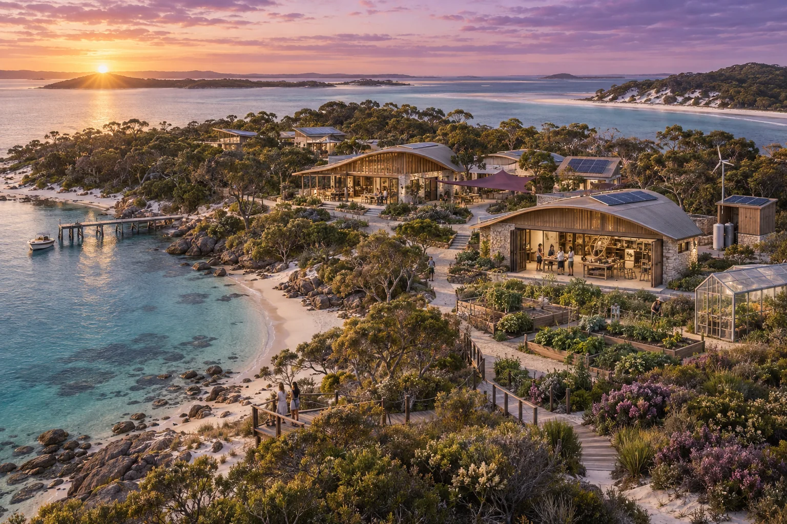

Local roots.
Open horizons.
Share teaching, research and opportunity while each community shapes the work that matters to it.
Connected people, distinct places
The international ambition grows from useful enterprises, relationships and backing. A network could share teaching, research, tools, mentoring and investment introductions while local communities shape their programmes. GAJRA's garland analogy captures the idea: distinct flowers connected through a shared purpose.
The Australian starting ambition is at least 500 women developing and exercising leadership. The original UNG20 pathway connects 500 across 20 national programmes with an aspiration to involve the United Nations, giving a starting scale of 10,000. A further 500 across 100 programme equivalents illustrates 50,000. Each figure is a minimum ambition with room for more participants and repeat intakes.

AI-generated concept illustration.
Build each connection through work
Bring a local group, a willing delivery partner and potential backers together around an opportunity. Run a shared project, price the local programme and agree services, representation and use of the name. Publish its activities and results before extending the relationship to the next community.
The Vuvale and Ocean of Peace submissions contribute a Pacific approach: listening, reciprocal learning and locally chosen projects in food, climate resilience, cultural production and civic AI. These are cooperation proposals. Government partnerships and involvement by UN organisations would need to be established through their own conversations and decisions.
Understand the scale of the original guide
The comparison below repeats the rounded 2021 Australian grant and operating inputs over five years. It illustrates scale, with local costs, currencies, programme sizes and start dates still to be worked through.
| Reference scale | Five-year grants | Five-year operations | Combined guide |
|---|---|---|---|
| 500, one programme | A$25 million | A$5 million | A$30 million |
| 10,000, twenty equivalents | A$500 million | A$100 million | A$600 million |
| 50,000, one hundred equivalents | A$2.5 billion | A$500 million | A$3 billion |
Carry the investment ambition forward
The original Series A ambition envisages A$500 million to A$10 billion in fund capital, with A$200,000 to A$10 million invested per enterprise. Series B and beyond imagines A$100 million to A$10 billion per investment and a fund larger than the SoftBank Vision Fund of that original period. These are historical ambitions for scale, not capital raised or currently available offers.
Build the next stage from enterprise cases: customer demand, leadership, financial records, use of funds and ownership terms. Capital sought would cover planned investments, follow-on reserves and fund costs. Access rights and fees need negotiation; a time-limited first look is one alternative to the archive's exclusive Series A access.
Show what prosperity delivers
Review community growth, paid executive responsibility, enterprise performance, available cash, income coverage and time for care and learning. These measures connect the Future of Life 2045 vision to daily experience.
Demonstrations, participant-approved stories and the proposed Earth-Space-AI Summit could help people find one another across borders. Keep the next action visible in each group: the work, a willing contact, resources and a date. Useful enterprises can then support further opportunity while shared research carries knowledge from local needs towards the solar-system horizon.